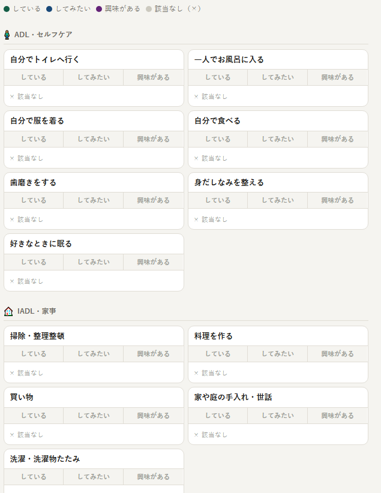
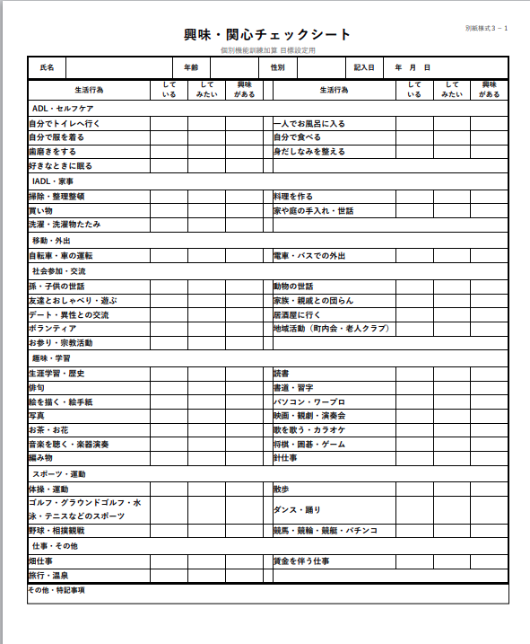

「興味・関心チェックシート（別紙様式3-1）」は、通所介護の個別機能訓練加算の目標設定に活用する評価票です。利用者が「している・してみたい・興味がある」生活行為を44項目から確認することで、その人らしい目標を設定するための手がかりを得ます。書き方がシンプルだからこそ、活用の深さは記入者の関わり方で大きく変わります。


興味・関心チェックシートとは
もともと日本作業療法士協会が開発したツールで、生活行為向上マネジメント（MTDLP）の一部として活用されてきました。2015年以降の介護報酬改定で個別機能訓練加算の様式として位置づけられ、現在は厚生労働省の別紙様式3-1として広く使われています。
| 正式名称 | 興味・関心チェックシート（別紙様式3-1） |
|---|---|
| 使用場面 | 個別機能訓練加算の目標設定・計画書作成時 |
| 項目数 | 44項目（ADL・IADL・社会参加・趣味・スポーツ・仕事など） |
| 評価方法 | 「している・してみたい・興味がある」の3択 |
| 開発元 | 一般社団法人日本作業療法士協会 |
3択の意味と記入のポイント
「している」
現在、実際に行っている生活行為に〇をつけます。頻度や自立度は問いません。「週に1回でも料理している」なら「している」です。
「してみたい」
現在はしていないが、できるようになりたい・再開したい生活行為です。かつてやっていたができなくなったもの、まだやったことはないが挑戦したいものも含みます。
「興味がある」
できる・できないに関わらず、興味・関心がある行為です。「してみたい」との違いは「今すぐやりたいわけではないが、気になっている」というニュアンスです。
目標設定への活用方法
チェックシートは記入して終わりではなく、個別機能訓練計画書の目標設定に活かすことが重要です。
「してみたい」を起点にする
「してみたい」に〇がついた項目は、本人の動機づけが高い生活行為です。「孫と一緒に散歩したい」「また料理を作りたい」といった具体的な目標と直結しやすく、計画書の長期・短期目標に落とし込みやすい素材です。
→ 短期目標：「屋外を手すりなしで50m歩行できる」
→ 長期目標：「孫と近所の公園まで散歩できる」
「している」の維持も重要
現在「している」と答えた項目は、その生活行為を維持・継続できるよう支援することが目標になります。特に加齢や疾患の進行で失われるリスクがある行為は、維持を目標として明示することが大切です。
「興味がある」は会話のきっかけに
「興味がある」に〇がついた項目は、本人とのコミュニケーションを深めるための入口として活用できます。「どんなことが気になっているのか」を掘り下げることで、チェックシートには現れない本人のニーズが見えてくることがあります。
記入時のコツ
- 本人が自分で記入できる場合はできるだけ本人に記入してもらう
- 認知症等で記入が難しい場合は、口頭で確認しながら代筆する
- 「その他・特記事項」欄にリストにない生活行為や本人の言葉を記録する
- 家族から聞いた情報（昔の趣味、やりたいと話していたこと）も参考にする
- 定期的に再評価し、生活状況の変化を計画書に反映させる
スマホで入力してそのまま印刷できる無料ツール
このサイトでは、興味・関心チェックシート（別紙様式3-1）に対応した無料の入力・印刷ツールを提供しています。
- 登録不要・アプリ不要・ブラウザだけで使える
- スマホ・タブレット・PCすべてに対応
- 44項目をタップで「している・してみたい・興味がある」から選択
- 入力データはブラウザ内で完結（外部送信なし）
- 選択した項目に〇が入った状態でA4印刷・PDF保存に対応
- 完全無料